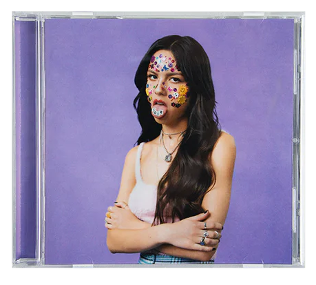
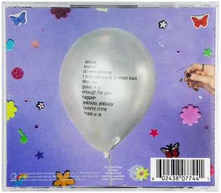
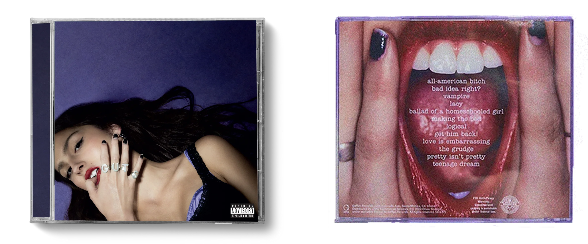
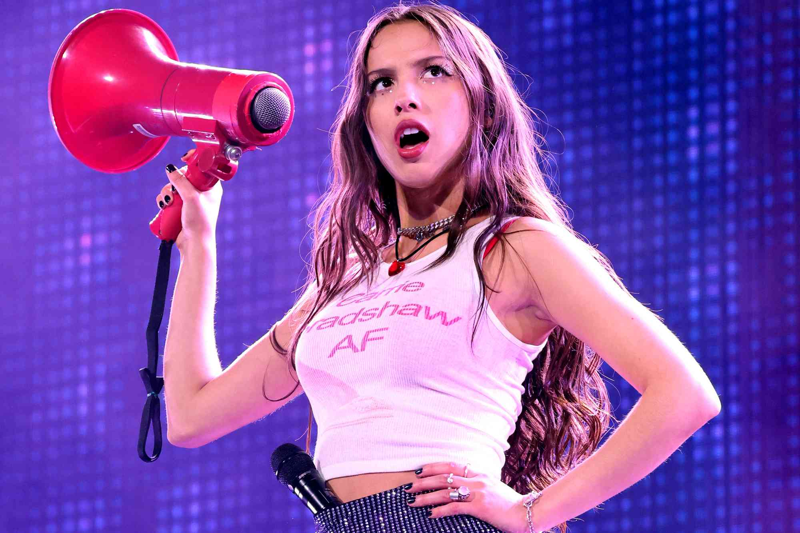

Olivia Rodrigo, la voz de un generación

Olivia Isabel Rodrigo es una cantante, compositora y actriz estadounidense, nacida el 20 de febrero de 2003 en Murrieta, California. Desde muy pequeña demostró interés por la música y la interpretación, desarrollando habilidades en el canto, el piano y la guitarra. Con el paso de los años, logró combinar ambas pasiones y construir una carrera artística que la llevó a convertirse en una de las figuras más reconocidas del pop contemporáneo.
Sus primeros pasos en el mundo del entretenimiento fueron como actriz infantil, participando en anuncios publicitarios y en la película An American Girl: Grace Stirs Up Success (2015). Sin embargo, alcanzó mayor reconocimiento gracias a sus papeles protagónicos en las producciones de Disney Bizaardvark (2016-2019), donde interpretó a Paige Olvera, y High School Musical: The Musical: The Series (2019-2022), en la que dio vida a Nini Salazar-Roberts.
Durante su participación en esa serie, Olivia comenzó a destacar como compositora con «All I Want», lo que la impulsó a desarrollar una carrera musical solista. En 2020 firmó con Geffen Records y en enero de 2021 lanzó "drivers license", un éxito mundial que llegó al número uno del Billboard Hot 100.
Ese impulso llevó a su álbum debut, SOUR (2021), centrado en el desamor, las inseguridades y el crecimiento juvenil con mezclas de pop, rock alternativo y pop punk, y temas como "deja vu" y "good 4 u". El disco debutó en lo más alto del Billboard 200 y, en 2022, junto al documental driving home 2 u, le valió tres premios Grammy.
En 2022 protagonizó el documental Olivia Rodrigo: driving home 2 u (a SOUR film), una producción que recorre el proceso creativo detrás de su primer álbum y muestra distintas interpretaciones de sus canciones. Ese mismo año recibió tres premios Grammy, incluyendo Mejor Artista Nuevo, Mejor Álbum Vocal Pop y Mejor Interpretación Pop Solista por "drivers license".

Su segundo Album
En septiembre de 2023 presentó su segundo álbum de estudio, GUTS, con el que profundizó su identidad musical y exploró nuevas temáticas. A diferencia de su primer trabajo, este disco aborda cuestiones como la presión social, las inseguridades, las expectativas personales, el enojo y las dificultades de crecer. Con canciones como "vampire", "bad idea right?", "get him back!" y "making the bed", Olivia mostró una faceta más experimental y enérgica, incorporando influencias del rock y el pop punk. El álbum debutó en el primer puesto del Billboard 200 y su sencillo principal, "vampire", también alcanzó el número uno del Billboard Hot 100.
En 2024 inició el GUTS World Tour, su segunda gira internacional, que recorrió más de 20 países y contó con numerosas presentaciones con entradas agotadas. Además, durante esta etapa impulsó Fund 4 Good, una iniciativa destinada a apoyar organizaciones que trabajan por la igualdad de oportunidades, la educación de niñas y mujeres, los derechos reproductivos y la prevención de la violencia de género.

Su tercer álbum y su legado
Su trayectoria continuó creciendo en 2026 con el lanzamiento de su tercer álbum de estudio, you seem pretty sad for a girl so in love, publicado el 12 de junio a través de Geffen Records. Este nuevo trabajo presenta una perspectiva diferente sobre el amor y las relaciones, explorando los sentimientos de ilusión, vulnerabilidad, nostalgia y melancolía. Su primer sencillo, «drop dead», alcanzó el primer puesto del Billboard Hot 100, convirtiendo a Olivia en la primera artista en conseguir que los sencillos principales de sus tres primeros álbumes debutaran directamente en esa posición.
A lo largo de su carrera, Olivia Rodrigo ha construido una identidad artística caracterizada por sus letras personales, su expresividad y su capacidad para transformar experiencias y emociones cotidianas en canciones con las que muchas personas pueden identificarse. Su música combina distintos géneros y refleja una evolución constante, tanto en su composición como en su interpretación.
Entre sus reconocimientos se encuentran tres premios Grammy, siete Billboard Music Awards y otros numerosos galardones. También fue nombrada Mujer del Año por Billboard en 2022 y recibió importantes distinciones por su trabajo como compositora. Actualmente, continúa consolidándose como una de las artistas más influyentes de su generación.
